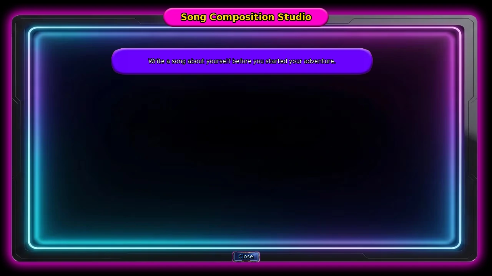
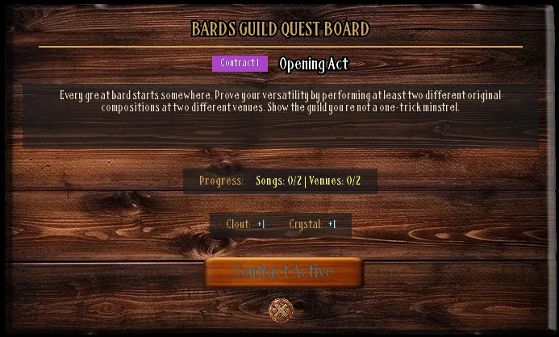
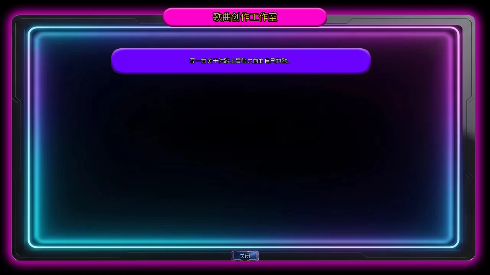
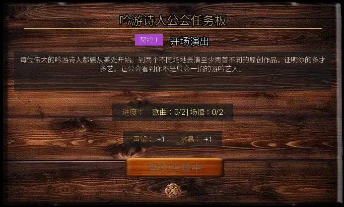

Select a screenshot to enlarge it. Screens show example inventories and progress.
The Bards Guild in Medieval, Kings Demesne opens 13:00–24:00. There is no initiation: visit the Quest Board directly. Learn Song Writing and Music Production, compose songs, then perform at different venues for Clout, gold and Valuables.
- At Creativity 25, learn Song Writing at the guild 13:00–21:00.
- Learn Music Production at the Present Downtown Music Studio, 12:00–23:00, with Technology 25.
- At Creativity 50 with both skills, choose Compose Song at the studio.
- Perform a completed song; new song/venue combinations earn first-use Clout, while the board tracks songs and venues separately.
Lessons and your first composition
| Action or skill | Where and when | Requirement | Price and base cost |
|---|---|---|---|
| Song Writing | Bards Guild · 13:00–21:00 | Creativity 25 | $300 · 220 min; 60 Energy, 60 Calm |
| Music Production | Music Studio · 12:00–23:00 | Technology 25 | $500 · 180 min; 50 Energy, 50 Calm |
| Silver Tongue | Bards Guild · 13:00–21:00 | Charm 20 | $600 · 360 min; 60 Energy, 60 Calm |
| Develop Creativity | Bards Guild | Repeatable | $60 · 60 min; 45 Energy; +1 Creativity |
| Stand Up Comedy | Bards Guild | Once | 60 min; +1 Creativity, +1 Charm |
Song Writing and Silver Tongue lessons stop at 21:00, earlier than the building closes. Creativity 50 gates composition, not the Music Production lesson.
Choose Compose Song in the Music Studio, then an unlocked topic. Each song has six memory questions with shuffled choices. Normally one wrong answer is allowed; Storytelling raises that to two. Exceed the allowance and that quiz fails. You can retry within the same composing visit or select another available topic after finishing a song.
Once you select any topic, leaving that composing visit charges $200, 30 minutes and 30 Energy once. Further quizzes or compositions within that same visit do not each add another charge. Closing before choosing any topic is free. A completed song remains available for repeat performances.

Ten compositions and an additional duet
Start with the always-available topic. Other topics check actual encounters, recruitment or relationships; more Creativity alone does not unlock them all. There are ten quiz compositions, plus an eleventh performable song unlocked directly through Lily’s route.
Show every topic’s exact unlock (character and location hints)
| Song | Unlock |
|---|---|
| Ballad of Bobo | Bobo active in your menagerie |
| Same Song, Different Day | Always available |
| The Velvet Thief | Vixen active as a worker |
| I Cucked the Balrog | Maize active as a worker and Sylph Crown owned |
| Empty Strings | Sandra active as a worker |
| Low End | Talena Romantic or higher |
| Still Waters | Nerida Romantic or higher |
| Muse and Her Lute | Complete the fifth Muse encounter |
| A Stage of My Own | Violet’s A Stage of Her Own scene completed |
| Vampires Bite | Ordinary-dungeon Floor 25 miniboss defeated |
Lily’s The Rose and the Thorn is added directly when her relevant 20-Clout scene completes; there is no extra composing quiz. Its guild debut is recorded and uses that venue’s performance for the day. The scene separately gives three Clout.
Performing and choosing a venue
| Venue | Hours |
|---|---|
| Performance Stage | 06:00–21:00 |
| Bards Guild | 13:00–24:00 |
| Rowdy Alehouse | 20:00–03:00 |
| The Bar | Once the room is available |
A performance costs 60 minutes and 30 Energy, once per venue per day. Venue limits reset at midnight and are independent, so you can perform at several venues on one day. One completed song is enough; the board does not require an accepted quest first.
The first performance of a song at a particular venue guarantees one Bards Guild Clout. A repeated combination has a 10% chance of one Clout, or 20% with Master Performer. Rotate songs and venues to build standing faster. Each performance also gives gold and 0–5 Valuables, plus one more Valuable with a Lute.
Show income, skill bonuses and bonus-scene chances
- Gold rolls from floor(modified Creativity / 2), minimum one, to floor(modified Creativity × 2), with a valid integer range. Stage Presence and Musical Virtuosity each double it, stacking multiplicatively; the Lute then adds $50.
- Bonus performance-scene roll: 25% base, +5 percentage points each for Master Performer, Stage Presence, Musical Virtuosity and Storytelling, plus five for a Lute; cap 50%. This is separate from repeat-performance Clout.
- The Lute’s continuing benefits include these performance bonuses and +5 ms tolerance in supported rhythm games. Do not treat one-off rewards from Muse’s encounters as the instrument’s permanent stat modifiers.
The board tracks two cumulative counts
Claim board rewards in order, with no separate acceptance requirement. It counts distinct songs you have performed and distinct venues you have used independently. You do not need every song at every venue, and claiming does not clear that history. If your existing record qualifies for the next quest, claim that too.
Show all six quests and rewards
| Quest | Distinct songs | Distinct venues | Clout | Items |
|---|---|---|---|---|
| Opening Act | 2 | 2 | +1 | 1 Crystals |
| Touring Troubadour | 3 | 3 | +1 | Bardic Lyre Pin |
| Crowd Favourite | 4 | 3 | +1 | 10 Valuables |
| Rising Star | 5 | 3 | +2 | 1 Crystals |
| Legendary Bard | 6 | 4 | +2 | Dirt Trap Carpet |
| Maestro | 7 | 4 | +3 | 1 Crystals |
The full board gives ten Clout, three Crystals, ten Valuables, a Bardic Lyre Pin and a Dirt Trap Carpet. The last quest needs seven performed songs and four venues; composing seven songs without performing them does not satisfy it.

Other Clout sources and character milestones
Bards Guild Clout is separate from the modern drum game’s Band Clout. Drum songs do not satisfy Bards gates; the character sheet lists both separately. Standing is a threshold and is retained when claiming quests, unlocking scenes or recruiting.
- Lily’s alley duet: ten percentage points of success per composed song, capped at 100%. Success gives one Clout and advances her encounter count.
- Dungeon Lily: duet success is song count × 10 / 120 and awards one Clout; listening fully restores Health, Energy and Calm and advances her encounter count. After six successful encounters, she leaves both random encounter pools and becomes a guild regular 13:00–24:00.
- Sandra’s duet minigame: Friend and her proposal completed; 30 minutes, ten Energy. Finishing has a separate 25% chance of one Bards Clout. See Sandra for her route.
- At 25 Clout, return to the guild for Violet’s backstory and song topic. At 50, return for recruitment. Both are automatic location scenes and retain your Clout.
Lily’s song and venue checks
Lily’s progression checks relationships, Clout, dates and the venue history of her particular duet. The ordinary board counts all song titles; her later checks count where that duet was performed. Use Lily for her personal interactions.
Show Lily’s quest gates and manual actions (no story outcomes)
| Order and task | Requirements |
|---|---|
| 1 · The Echo Finds a Room | Six successful encounters; guild 13:00–24:00 |
| 2 · Songs Without Endings | Met; ten Clout; guild; previous scene |
| 3 · A House With Two Names | Friend; 15 Clout; Bar 09:00–24:00; previous scene and Lantern Rhythms date |
| 4 · The Rose and the Thorn | Friend; 20 Clout; guild; previous scene; +3 Clout and duet unlock |
| 5 · Both Names on the Page | Close Friend; 25 Clout; guild; previous scene and A Rest Between Notes date; duet performed at three official venues |
| 6 · Where the Echo Returns | Close Friend; 30 Clout; guild; previous scene |
| 7 · A Place in the Refrain | Crush; 40 Clout; Bar 09:00–24:00; previous scene; duet performed at all four official venues |
Guild scenes in the table run 13:00–24:00. Select the following heart-to-hearts and dates from her guild portrait. The first heart-to-heart opens Lantern Rhythms; the 20-Clout song scene opens After the Applause, which opens A Rest Between Notes. The last heart-to-heart waits for the 40-Clout scene.
| Interaction | Relationship and hours | Costs and effects |
|---|---|---|
| A Note She Won't Resolve | Known · 21:00–24:00 | $0 · 90 min; 15 Energy; Calm +8 |
| Lantern Rhythms | Friend · 17:00–22:00 | $80 · 120 min; 30 Energy; Calm +8 |
| After the Applause | Close Friend · 21:00–24:00 | $0 · 90 min; 15 Energy; Calm +10 |
| A Rest Between Notes | Close Friend · 18:00–22:00 | $50 · 120 min; 25 Energy; Calm +10 |
| Without the Song | Crush · 21:00–24:00 | $0 · 90 min; 15 Energy; Calm +15 |
Optional quiz hints
Show neutral quiz hints without biographies or endings
- Answer the six questions from the story you just heard. Where a topic asks about private history, revisit that scene; this guide does not reproduce biographies, ages or endings.
- The always-available everyday-life topic concerns repetitive routines, four guitar chords and the change that begins the adventure.
- Bobo, Sandra, Vixen, Talena and Nerida topics: identify the subject, then recall her instrument, personality, locations and conversations. Avoid importing another character’s experiences.
- Violet and Muse topics use their completed personal scenes. Their private-history answers are deliberately not reproduced here.
- The Floor 25 topic recalls the vampire region, its castle and that floor’s miniboss challenge.
- Choices shuffle. Storytelling allows one additional wrong answer; a failed quiz can be retried within the same composing visit.
What to check when progress stalls
- Lessons missing: their guild window is 13:00–21:00, although the building remains open until midnight.
- No Compose Song action: check both skills, Creativity 50 and studio hours 12:00–23:00.
- No new topic: completed songs leave the composing list; other topics need their own recruitment, encounter or relationship unlock.
- Board unchanged: perform different songs; repeats of one song do not increase distinct titles. All four venues include the Rose & Thorn Bar, so that room must be available.
- Cost paid after closing the song selector: Perform pays before selection, so cancelling does not refund time or Energy. No selection means no recorded performance or daily venue use. Open Perform when ready.
- Lily route unchanged: take her particular duet to the required number of venues, rather than performing arbitrary songs.
- Wrong Clout counter: Band and Bards Guild are independent values on the character sheet.
- During the holiday task chain, the guild also offers a one-time 30-minute Sing Carols with Sandra action 13:00–18:00 with Sandra Acquaintance. It belongs to that event, not the six performance-board quests.
中世纪国王领地的吟游诗人公会开放13:00–24:00。无需入会考验，直接查看任务板即可。主要循环是学会作词作曲与音乐制作、完成歌曲，再到不同场地演出，赚取声望、金币与贵重品。
- 创造力25后，在公会13:00–21:00学作词作曲。
- 现代市中心的音乐工作室12:00–23:00学音乐制作，需要科技25。
- 创造力50、两项技能齐全后，在工作室选择创作歌曲。
- 带着已完成歌曲去演出；不同歌曲与场地有首次奖励，任务板看两种独立计数。
课程与第一次创作
| 行动或技能 | 地点与时段 | 条件 | 费用与基础消耗 |
|---|---|---|---|
| 作词作曲 | 吟游诗人公会 · 13:00–21:00 | 创造力 25 | $300 · 220分钟；60精力、60镇定 |
| 音乐制作 | 音乐工作室 · 12:00–23:00 | 科技 25 | $500 · 180分钟；50精力、50镇定 |
| 巧舌如簧 | 吟游诗人公会 · 13:00–21:00 | 魅力 20 | $600 · 360分钟；60精力、60镇定 |
| 培养创造力 | 吟游诗人公会 | 可重复 | $60 · 60分钟；45精力；创造力+1 |
| 单口喜剧 | 吟游诗人公会 | 仅一次 | 60分钟；创造力+1、魅力+1 |
作词作曲和巧舌如簧的课程本身到21:00结束，早于公会关门。创造力50是创作行动的门槛，不是音乐制作课程的额外条件。
在音乐工作室选择作曲，再选一个已解锁题材。每首是六道记忆题，选项会打乱；通常最多错1题，有讲故事则可错2题，超过后失败。失败可在同次创作中再试；完成一首后也可继续选其他可用题材。
本次创作只要选过题材，离开时统一支付$200、30分钟与30精力；同次界面内继续答题或创作不会逐首重复收费。若打开后未选任何题材就关闭，则不收费。已经创作的歌曲可反复演出，无需重新创作。

可创作的十首歌与额外二重奏
先从始终可用的题材开始。其他题材依赖你实际完成的遭遇、招募或关系，并非只把创造力堆高就全部开放。当前有10首问答创作，Lily支线另可直接加入第11首可演出歌曲。
展开全部题材的准确开放条件（含人物与地点提示）
| 歌曲 | 开放条件 |
|---|---|
| Bobo之歌 | Bobo为活跃怪物 |
| 同一首歌，不同的一天 | 始终可用 |
| 天鹅绒盗贼 | Vixen为活跃员工 |
| 我抢走了Balrog的女友 | Maize为活跃员工，持有小天使王冠 |
| 空弦 | Sandra为活跃员工 |
| 低音部 | Talena浪漫感或更高 |
| 静水 | Nerida浪漫感或更高 |
| Muse与她的鲁特琴 | 完成Muse的第五次遭遇 |
| 属于我的舞台 | 完成Violet的个人往事场景 |
| 吸血鬼之咬 | 击败普通地下城楼层25的关卡首领 |
Lily的玫瑰与荆棘在她的相应20声望场景完成时直接加入歌曲列表，无需再答创作问答。首次公会演出也会记入记录，并占用当天该场地的演出；该场景另外给3声望。
怎么演出、何时换场地
| 场地 | 开放时段 |
|---|---|
| 表演舞台 | 06:00–21:00 |
| 吟游诗人公会 | 13:00–24:00 |
| 喧闹酒馆 | 20:00–03:00 |
| 酒吧 | 房间开放后 |
每次演出为60分钟、30精力，同一场地每天一次。午夜重置场地次数；四处场地分开计算，因此同一天可在多处演出。只要有至少一首已完成歌曲即可选择演出，不需要任务板先接取。
同一首歌第一次在某场地演出，保证+1吟游诗人公会声望。重复组合仍有10%几率+1；拥有表演大师时为20%。因此换歌曲、换场地通常比只反复演同一首更快积累声望。每次另有金币与0–5贵重品，持有鲁特琴时贵重品再+1。
展开收入、技能加成与额外场景几率
- 金币在当前创造力÷2至当前创造力×2之间随机取整数（下限至少1）。舞台魅力与音乐造诣分别使金币翻倍，两者可相乘；鲁特琴再加$50。
- 演出后的场景抽取基础25%，表演大师、舞台魅力、音乐造诣、讲故事每项再加5个百分点，鲁特琴再加5，最高50%。它与重复演出的声望抽取是两项不同检查。
- 鲁特琴本身的持续效果包括这些演出加成，以及适用节奏小游戏+5毫秒判定宽容；不要把Muse遭遇中的一次性奖励当作琴的常驻属性加成。
任务板看两种累计记录
任务按顺序领取，但没有“先接受”按钮要求。它检查你实际演出过的不同歌曲数与不同场地数，两者独立统计；不要求每首歌在每个场地都演一遍，也不会为下一份任务清空旧记录。回公会领取后，若已满足下一档，可继续领取。
展开六份任务与完整奖励
| 任务 | 不同歌曲 | 不同场地 | 声望 | 物品 |
|---|---|---|---|---|
| 开场演出 | 2 | 2 | +1 | 1 水晶 |
| 巡演游吟者 | 3 | 3 | +1 | 吟游诗人里拉胸针 |
| 观众宠儿 | 4 | 3 | +1 | 10 贵重品 |
| 冉冉升起的新星 | 5 | 3 | +2 | 1 水晶 |
| 传奇吟游诗人 | 6 | 4 | +2 | 集尘地毯 |
| 大师 | 7 | 4 | +3 | 1 水晶 |
全部任务合计10声望、3水晶、10贵重品、吟游诗人里拉胸针与集尘地毯。最后一份需7首歌曲、4个场地；只完成7首创作却没实际演出，不算完成。

其他声望来源与人物门槛
吟游诗人公会声望和现代鼓乐小游戏的乐队声望分开计算。演奏鼓曲不会替代本公会门槛；角色面板会把两项分别列出。声望是达标条件，领取任务、解锁剧情或招募时不会扣除。
- 后巷的Lily二重奏：每首已完成歌曲增加10个百分点成功率，最多100%；成功给1声望并推进相遇计数。
- 地下城遇到Lily时，合奏成功率为歌曲数×10÷120，成功给1声望；选择聆听可完全恢复生命、精力、镇定，也推进相遇计数。六次成功相遇后，她离开两种随机遭遇，改为公会13:00–24:00的固定人物。
- Sandra的二重奏小游戏：朋友、完成她的提议后，30分钟、10精力；完成时另有25%几率+1公会声望。个人路线见Sandra。
- 25声望：回公会触发Violet的个人往事，开放她的创作题材；50声望：回公会推进她的招募。两者均是自动地点剧情，不消耗声望。
Lily的歌曲与场地检查
Lily的后续会检查关系、声望、约会和指定二重奏的场地记录。普通任务板只数所有歌曲的总种类，而她的这些检查只看与她的二重奏；两种进度不要混淆。完整个人互动见Lily指南。
展开Lily的任务门槛与手动互动（无剧情结果）
| 顺序与任务 | 条件 |
|---|---|
| 1 · 回声有了归处 | 六次成功相遇；公会13:00–24:00 |
| 2 · 没有结尾的歌 | 已遇见；10声望；公会；上一段完成 |
| 3 · 一个屋檐，两个名字 | 朋友；15声望；酒吧09:00–24:00；上一段与灯笼的节拍约会完成 |
| 4 · 玫瑰与荆棘 | 朋友；20声望；公会；上一段完成；+3声望，加入二重奏 |
| 5 · 纸上的两个名字 | 亲密朋友；25声望；公会；上一段与音符之间的休止完成；该二重奏已在3处正式场地演出 |
| 6 · 回声归来之地 | 亲密朋友；30声望；公会；上一段完成 |
| 7 · 副歌里的一席之地 | 迷恋；40声望；酒吧09:00–24:00；上一段完成；该二重奏已在全部4处正式场地演出 |
上表的公会剧情均在13:00–24:00触发。以下交心谈话与约会从她的公会头像选择；完成首段交心后开放灯笼的节拍约会，20声望歌曲事件后开放掌声之后交心，随后开放音符之间的休止；最后一段交心需40声望剧情完成。
| 互动 | 关系与时段 | 费用与效果 |
|---|---|---|
| 她不肯落下的音符 | 已知 · 21:00–24:00 | $0 · 90分钟；15精力；镇定+8 |
| 灯笼的节拍 | 朋友 · 17:00–22:00 | $80 · 120分钟；30精力；镇定+8 |
| 掌声之后 | 亲密朋友 · 21:00–24:00 | $0 · 90分钟；15精力；镇定+10 |
| 音符之间的休止 | 亲密朋友 · 18:00–22:00 | $50 · 120分钟；25精力；镇定+10 |
| 不借歌声 | 迷恋 · 21:00–24:00 | $0 · 90分钟；15精力；镇定+15 |
可选问答提示
展开不涉及身世与结局的答题提示
- 使用刚听过的故事回答六题；若题材涉及人物私人经历，回看该段内容即可。这里不摘录个人身世、年龄或结局。
- 始终开放的日常题材：围绕重复的日常、吉他的四个和弦与创作的转变。
- Bobo、Sandra、Vixen、Talena、Nerida的题材：先确认人物是谁，再根据她们的乐器、性格、地点和对话回答，不要把其他人物的经历混入。
- Violet与Muse的题材：以刚完成的个人场景为准；本指南不列私人经历的逐字答案。
- 楼层25题材：回忆吸血鬼区域、城堡与那次关卡挑战。
- 选项会洗牌。讲故事允许多错一题；失败后可在同次创作界面重新选择题材再试。
卡关时先检查什么
- 公会课程不见：课程限13:00–21:00；建筑本身到午夜仍开放。
- 没有创作行动：核对两项技能、创造力50及音乐工作室12:00–23:00。
- 没有新题材：已经完成的歌不会再次列出；其他题材要满足各自的招募、遭遇或关系条件。
- 任务板不动：需要实际演出不同歌曲；同一首反复演不会增加歌曲种类。四场地包含玫瑰与荆棘的酒吧，需先开放房间。
- 演出菜单关闭也花了时间或精力：演出行动会先支付成本，退出选歌不会返还；未选歌不记录演出，也不占用当天次数。准备好再选择演出行动。
- Lily的任务不动：检查是否把她的二重奏带到指定数量的场地，而不只是演出了任意歌曲。
- 声望来源不对：角色面板的乐队和吟游诗人公会是两项独立数值。
- 节日任务开放时，公会13:00–18:00另有与Sandra唱颂歌的30分钟一次性行动，需要Sandra相识；它是节日任务，不是这六份演出任务之一。
Adapted and updated from the community Chronoromancer Wiki. Community source and history · CC BY-SA 4.0. Game images © Chronoromancer Studio.